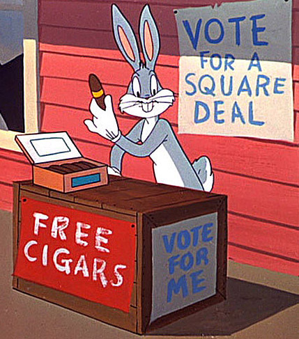

Bugs Bunny for Mayor
Political PositionsAs you might already know, toontown has had a severe shortage of carrots. There has also been controversy surrounding the mysterious topic of where our tax dollars have been going. Bugs Bunny is just a normal citizen who shares your concern on these issue. Yes he is a normal citizen but he is also very qualified, and we believe that he is the perfect fit for the new Mayor of Toontown. As Mayor, the first thing that Bugs will address is the carrot shortage. He plans on being more open about how the town spends your tax money, so that you can confidently see where every cent of it goes. The first thing that you will notice is how the majority of your taxes are being put into our abundant new carrot farms. We believe that these will provide up to 50% more carrots for our town! If you ever have any concerns about the town, remember that Bugs has your back. |
 |